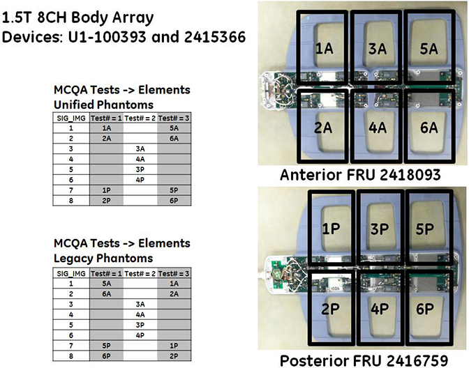
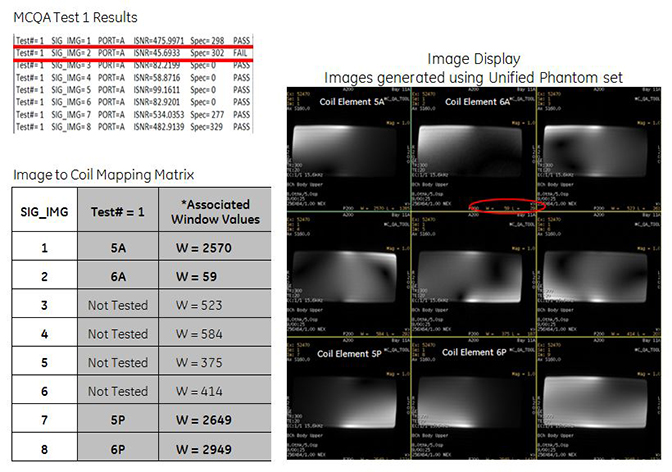
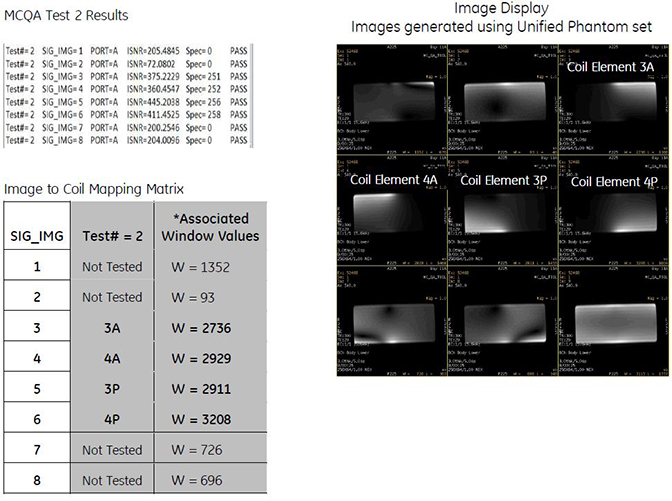
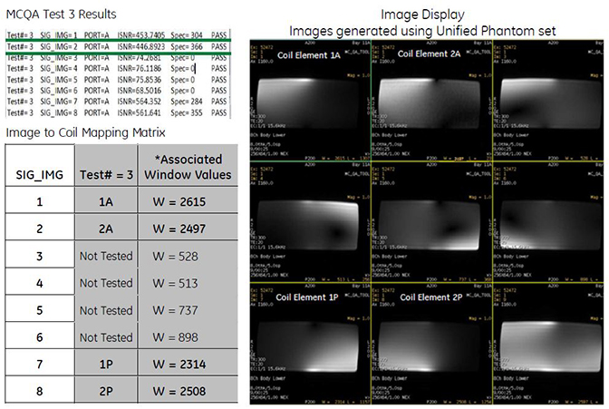
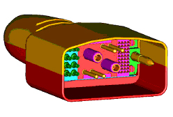
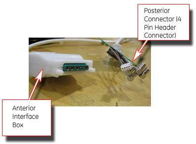

- 00000018WIA308F0F20GYZ
- id_131059293.1
- Oct 20, 2022 2:11:56 PM
1.5T 8-Channel Body Array Coil Troubleshooting
Overview
The following tips can be used to troubleshoot common problems with the HD 8-Channel Body Array Coil (GE/USAI PN: 2415366).
Required Conditions
The 8-Channel Body Array Coil must be installed in the system.
Troubleshooting Tips
The following sections contain information about troubleshooting the HD 8-Channel Body Array Coil, if there is no signal or other problems occur.
Receiving No Signal
Problem:
You are unable to pre-scan or are scanning and yet receiving no signal.
Possible Solution:
-
Verify that the port used to plug in the coil either has a green light illuminated (port A or port B) or a green lock indicated (port P1, P2, P3, or P4). This indicates the coil is properly plugged into the system.
-
Verify that the system has correctly detected the coil by checking the Currently Connected in the GUI shown in Currently Connected Coils Window in Scan Screen
-
Verify that the landmark is correct and that the cradle has not unlatched.
-
Verify that the scan locations and any FOV offsets are correct.
-
Perform a continuity check on the external cable using the instructions in DC Continuity Test (to be performed by a GE-authorized Service Engineer only).

If you still cannot get a signal, try to scan (transmit and receive) with the body coil. For this test, be sure to remove the imaging coil from the magnet bore before scanning with the body coil. If you still receive no signal, the problem probably lies with the MR system. If the scan completes successfully, there is probably a problem with the coil. Contact GE for further assistance.
Image Quality
Problem:
Image quality is not as good as you expect from the coil.
Possible Solution:
-
Perform MCQA Tool and review results.
-
Perform a continuity check on the external cable using the instructions in DC Continuity Test (to be performed by a GE-authorized Service Engineer only).
-
Verify that there are no loops in the cables.
-
Verify that there are no metal or ferromagnetic objects close to the coil, patient or magnet (such as a safety pin or hair pin).
-
Verify that the coil is properly positioned.
-
Verify that the center frequency is within the frequency adjustment range for the system.
-
Verify that the R1, R2, and TG values from the prescan are within normally expected ranges.
Coil Mapping Information

Example Results of MCQA on 1.5T 8-Channel Body Array Coil

Example:
-
In this example, Test 1, Image 2 fails SNR.
-
This image 2 corresponds to the anterior, element 6A.
-
Test 2 passes all images, however, does not test element 6A.
-
Test 3, Image 2 passes, but now it is testing anterior, element 2A.
Conclusion: Receive chain from coil to recon is good, however, element 6A on the anterior part of the coil is bad. Replace the anterior FRU.
To view signal images, use Image Display in a 3 X 3 matrix.
This will show each of the intermediate images (1 through 8), plus the composite image as image 9.
-
Images from coil elements being tested should have significantly higher W/L values than images that correspond to elements that are not tested.
-
Images from coil elements being tested, but that have significantly lower W/L values, would be considered as failing.



Artifacts
Problem:
There is a black line or signal void on the image.
Possible Solution:
Verify that there is no metal present in the area being scanned in or on the patient.
Problem:
Some or all of the images appear shaded or exhibit uneven signal or banding.
Possible Solution:
Confirm that no metallic objects are located nearby, outside the FOV. This is especially important on images utilizing Fat Saturation.
If Fat Saturation is being used, verify that the CFA fine adjustment has been optimized.
External Cable Wear
Problem:
The system does not recognize the coil or will not scan with the coil attached.
Under no circumstances should the continuity of the center pin of the coax connectors be measured. They may be extremely fragile when improper tools are used.
Possible Solutions:
Visual Inspection
Check the physical condition of the following pins on the Hypertronics system connector. Refer to Hypertronics Connector and Hypertronics Pin Out to locate the pins on the Hypertronics system connector.
A1-A2; C1-C4; D1-D4; J1-J3; J4-J10; M3; M5-M10;


If any of the above-mentioned pins are damaged, replace the cable assembly according to Cable Replacement Procedure .
If all the pins are OK, perform DC Continuity Test.
DC Continuity Test
Remove the cable according to Cable Replacement Procedure. Check the DC continuity between coil side connectors (anterior interior box with DC connector pin (small pin) and posterior with 4 DC pin header connector) and the Hypertronics coax connectors using a digital voltmeter in resistance mode. Use some conductor pin to get the access to the center pin of the anterior DC Pins. Perform the continuity check between the Hypertronics pin also as given in DC Continuity Check. Replace the cable, if it fails to pass the continuity test specs given in DC Continuity Check. Also refer to Hypertronics Connector and Coil Cable.

| DC Continuity Check for Anterior Connector (small coax DC connector) | ||||
| SN | Anterior Interface Box DC Connector | Hypertronics system connector | Resistance (Ohms) Specification | |
| Refer to Hypertronics Connector and Hypertronics Pin Out | ||||
| 1 | 1 | J1 | 0.75 + 0.5 | |
| 2 | 2 | J3 | 0.75 + 0.5 | |
| 3 | 3 | J2 | 0.75 + 0.5 | |
| 4 | 4 | M3 | 3 + 0.5 | |
| DC Continuity Check for Posterior Connector (4 PIN HEADER CONN) | ||||
| Posterior side 4 PIN DC Header Connector (White) | Hypertronics system connector | Resistance (Ohms) Specification | ||
| Refer to Hypertronics Connector and Hypertronics Pin Out | ||||
| 5 | 1 (Red Wired) | J8 | 0.75 + 0.5 | |
| 6 | 2 (Grey Wired) | J6 | 0.75 + 0.5 | |
| 7 | 3 (Blue Wired) | J7 | 0.75 + 0.5 | |
| 8 | 4 (Brown Wired) | M3 | 3 + 0.5 | |
Check if any of the pins from J1-J3 and J6-J8 of Hypertronics system connector is shorted to the ground. The outside conductor of a coaxial connector in column C or D can be used as ground. If any of the pins is shorted to ground, replace the cable according to Cable Replacement Procedure.
Check for the ground pin continuity check between M5, M8 and the RF ground pin for C1. The resistance should be less than 1 Ohm. If it fails the ground pin continuity test, replace the cable according to Cable Replacement Procedure.
After the new cable is installed, perform MCQA Test if it is available. Otherwise perform SNR Test.